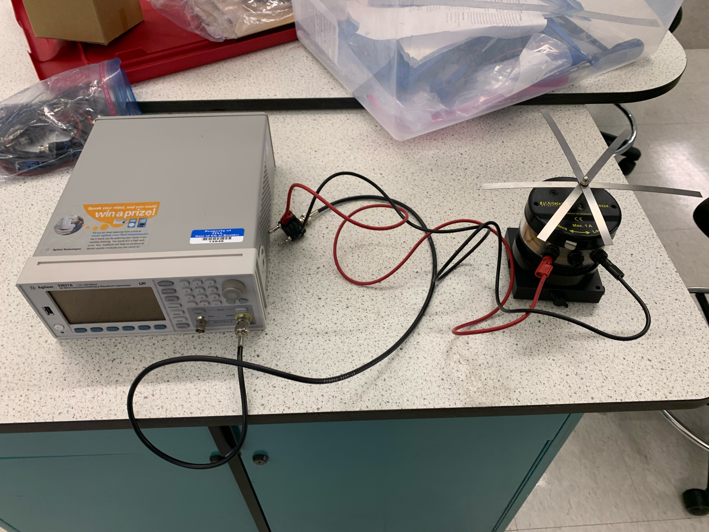

Fourier Model of Cantilevered
Beam Vibrations
An Analytical and Experimental Study
In collaboration with Aria Mundy and Korben Smart; October 2021 - December 2021
Background
This project investigated the vibrations of a cantilevered beam using modified wave equations that account for bending resistance. Analytical models based on Separation of Variables and Variation of Parameters were developed, and experiments were conducted to validate harmonic frequency predictions.
Cantilevered beams are commonly encountered in engineering, one such common example is that of an aircraft wing. For this application and many other applications, it is imperative to rigorously understand the behavior of cantilevered beams under an induced, time-varying loads. In this project, we extended the classical wave equation to include bending resistance, producing models suitable for predicting vibrations in stiff beams. Beam deflection is governed by fourth-order partial differential equations. Cantilever beams are unique in that they are fixed at one end and free at the other, requiring special boundary conditions for analysis. This project explores the homogeneous case using Separation of Variables and introduces a sinusoidal forcing function via Variation of Parameters to develop a model that was tested against experimental results.
Model Development
The Wave Equation for Beams
The equation of motion for a cantilevered beam includes a fourth-order spatial derivative and a second order temporal derivative:
$$ \rho \frac{\partial^2 u}{\partial t^2} = -Ek^2 \frac{\partial^4 u}{\partial s^4}, $$
where \( u(s, t) \) is the transverse displacement, \( \rho \) is material density, \( E \) is Young's modulus, and \( k \) is the radius of gyration. The boundary conditions for a cantilevered beam are:
- \( u(0, t) = 0 \): No displacement at the fixed end.
- \( \frac{\partial u}{\partial s}(0, t) = 0 \): No rotation at the fixed end.
- \( \frac{\partial^2 u}{\partial s^2}(L, t) = 0 \): No bending moment at the free end.
- \( \frac{\partial^3 u}{\partial s^3}(L, t) = 0 \): No shear force at the free end.
Separation of Variables
A common method for solving PDEs is assuming that their solution(s) are a product of single-variable functions, allowing you to easily calculate their partial derivatives. This method is called Separation of Variables and is used to solve many different PDEs, notably the Heat Equation and Wave Equation.
Using the aforementioned assumption \( u(s, t) = F(s)G(t) \), the equation is separated into spatial and temporal components. First \(\frac{\partial^4 u}{\partial s^4} = F''''(s)G(t) \), and \(\frac{\partial^2 u}{\partial t^2} = F(s)G''(t) \) are substituted into the equation to yield:
$$ \rho F(s)G''(t) = E k^2 F''''(s)G(t).$$
We can now collect like-terms and constants. Because we know the left-hand side of the equation does not vary spatially, and the right hand side does not vary temporally, we can surmise that each side is equivalent to some negative constant, \( \lambda \), shown as:
$$ \frac{G''(t)}{G(t)} = -\frac{E k^2}{\rho} \frac{F''''(s)}{F(s)} = \lambda .$$
We can now create the following two equations:
- \( G''(t) = -\lambda G(t) \)
- \( F''''(s) = \lambda \frac{\rho}{E k^2} F(s) \)
Equations 1 and 2 above can now be integrated. Noting that \( {\left \{ e^{i\sqrt{\lambda }t}, e^{-i\sqrt{\lambda }t}\right \}} \) and \( {\left \{ e^{\sqrt{\beta}s}, e^{\sqrt{\beta }s},e^{i\sqrt{\beta}s},, e^{i\sqrt{\beta}s} \right \}} \) spans the solution space of Equations 1 and 2 respectively, solutions for \( G(t) \) and \( F(s) \) take the form:
$$ G(t) = a\cos(\sqrt{\lambda}t) + b\sin(\sqrt{\lambda}t), $$ $$ F(s) = c_1 \cos(\beta s) + c_2 \sin(\beta s) + c_3 \cosh(\beta s) + c_4 \sinh(\beta s). $$
Where \( \beta = \frac{\rho\lambda}{Ek^2}.\)
Applying boundary conditions leads to quantized frequencies (\( \beta_n \)) satisfying:
$$ \cosh(\beta_n L) \cos(\beta_n L) = -1. $$
Solving for the coefficients in \( F(s) \) gives:
$$ F_{n}(s) = c_{4} \left [ \left ( \sinh(\sqrt{\beta_{n}}s)-\sin(\sqrt{\beta_{n}}s) \right ) +\left ( \frac{\cos(\sqrt{\beta_{n}}L)+\cosh(\sqrt{\beta_{n}}L)}{\sin(\sqrt{\beta_{n}}L)-\sinh(\sqrt{\beta_{n}}L)} \right ) \left (\cosh(\sqrt{\beta_{n}}s)-\cos(\sqrt{\beta_{n}}s) \right ) \right ]$$
Where \( n \) is any one of the infinite roots of the above equation. Substituting this back into our original separation of variables, we yield:
$$ u(s, t) = \sum_{n=1}^\infty F_n(s) \left[a_n(t) \sin(\sqrt{\lambda_n} t) + b_n(t) \cos(\sqrt{\lambda_n} t)\right]. $$
Variation of Parameters
In order to solve the wave equation with known forcing, the method of Variation of Parameters
will be applied to the results found in the previous section. Variation of Parameters
is a method used to solved differential equations with known forcing. Since the original partial
differential equation is second-order with respect to time, it can be regarded
similarly to a second-order, linear ordinary differential equation with constant coefficients
and a time-dependent forcing function.
Variation of Parameters can be executed in the following manner: once the
homogeneous solution is known (note that the homogeneous solution must contains two linearly
independent solutions to the homogeneous problem, given that the differential equation is
second-order with respect to time), it can be assumed that the particular solutions is of the
same form as the homogeneous solution, except for the fact that the coefficients now depend
on time. Two equations are needed to solve for the time-dependent coefficients. The first
equation can be obtained by noting that the proposed solution must satisfy the differential
equation. The second equation can come from a variety of places, but in this case, the second
equation will come from a clever assumption that will greatly simplify the calculations
involved in this method. Once the two equations are obtained, the time-dependent coefficients
can be determined, and the particular solution can be determined.
Quite frankly, I don't feel like writing out the LaTeX, so I will leave it to you, dear reader,
to find it in the PDF at the bottom of the page. I am nice enough to show you the final values of \( a_n \) and \( b_n \)
for a particular solution of the boundary condition where \( u(0,t) = A\sin(\Omega t): \)
$$ a_{n}(t) = \frac{AB_{n}\Omega^2\left (\sin(\sqrt{\lambda_n}t)\sin(\Omega t)\cos(\Omega t) -\Omega \sin(\sqrt{\lambda_n}t)\cos(\Omega t)\right )}{(\sqrt{\lambda_n} - \Omega)(\sqrt{\lambda_n} + \Omega)}, $$ $$ b_{n}(t) = \frac{AB_{n}\Omega^2\left (\sqrt{\lambda_n}\sin(\sqrt{\lambda_n}t)\sin(\Omega t) +\Omega \cos(\sqrt{\lambda_n}t)\cos(\Omega t)\right )}{(\sqrt{\lambda_n} - \Omega)(\sqrt{\lambda_n} + \Omega)}. $$
Numerical Experiment
An experiment was conducted to identify harmonic frequencies of cantilevered beams of varying lengths. A waveform generator drove the beams, and a strobe light was used to visualize harmonic modes. Observed data was compared with predictions.
Model Simulated Results

The above plot shows predicted harmonic frequencies generated from the equation in the Separation of Variables Section: \( \cosh(\beta_n L) \cos(\beta_n L) = -1 \).
Model Predicted Harmonic Frequencies
| Length (cm) | \( \omega_1 \) (Hz) | \( \omega_2 \) (Hz) | \( \omega_3 \) (Hz) |
|---|---|---|---|
| 13.1 | 23.9 | 149.1 | 417.4 |
| 12.1 | 27.9 | 174.7 | 489.2 |
| 11.1 | 33.3 | 207.6 | N/A |
| 9.1 | 49.2 | 308.9 | N/A |
| 8.1 | 62.2 | 389.9 | N/A |
| 7.1 | 81.0 | 507.5 | N/A |
Experimental Results
| Length (cm) | \( \omega_1 \) (Hz) | \( \omega_2 \) (Hz) | \( \omega_3 \) (Hz) |
|---|---|---|---|
| 13.1 | 21.4 | 138 | N/A |
| 12.1 | 24.5 | 165 | N/A |
| 11.1 | 35 | 179 | N/A |
| 9.1 | 44 | N/A | N/A |
| 8.1 | 56 | N/A | N/A |
| 7.1 | 69 | N/A | N/A |
The values collected during the experiment were consistently below the values predicted
by the analysis, and the error of these measurements ranged from 10% to 15%. This error
can likely be attributed to the experimental setup. Note that all six beams were connected
during the experiment. In addition, at the beginning of the experiment, each beam was
equally spaced, but as the data was being collected, the vibrations caused the beams to
move and distorted the spacing between each beam. These factors, combined with the
loose fastening of the beam to the vibrating pin, would likely cause some damping in the
vibrations of each beam. While there are other potential factors that could be the cause of
the discrepancy, these sources of dampening are the likely reason the results were below the
predicted values. Interestingly, there was one single measurement where the measured value
was actually larger than the predicted value, which occurred for the first harmonic frequency
of the 11 centimeter beam. The difference in results is likely due to environmental factors
that caused damping which were not included in our model
The predicted and experimentally determined values are quite similar. However, it was not
possible to experimentally determine the node positions of the second harmonic frequencies
for the beams that were 9 centimeters or shorter, nor any frequencies for the third harmonic,
as it was decided that trying to test those frequencies could have resulted in damage to the
experimental equipment.
Conclusion
In this project, a partial differential equation was introduced to extend the wave equation and describe the vibrations of stiff beam. By using the method of Separation of Variables, a spatial domain equation and time domain equation were determined, and combined to ultimately determine a solution describing the transverse displacement of the beam for the homogeneous case, where the beam is fixed at one end and free to move at the other end. Next, the boundary conditions were modified to account for the fact that the beam is vibrated at a known frequency at the fixed end and free to move at the other end. To solve this partial differential equation with a time-dependent forcing function, the method of Variation of Parameters was applied. A solution describing the transverse displacement of the vibrating beam, including equations that describe the time-dependent coefficients of this solution, were found. Finally, an experiment was carried out, where a series variable-length cantilever beams were oscillated at various frequencies. The experimental frequencies could be compared against expected frequencies. It was shown that the experimental frequencies were 10-15% lower than what was numerically calculated. There are many potential reasons for this, the most likely of which was a partial damping effect at the base of the resonance strips. In addition, it was shown that there is no rational step between harmonic frequencies of strings, rather there exists an ever-changing ratio between each fundamental harmonics.